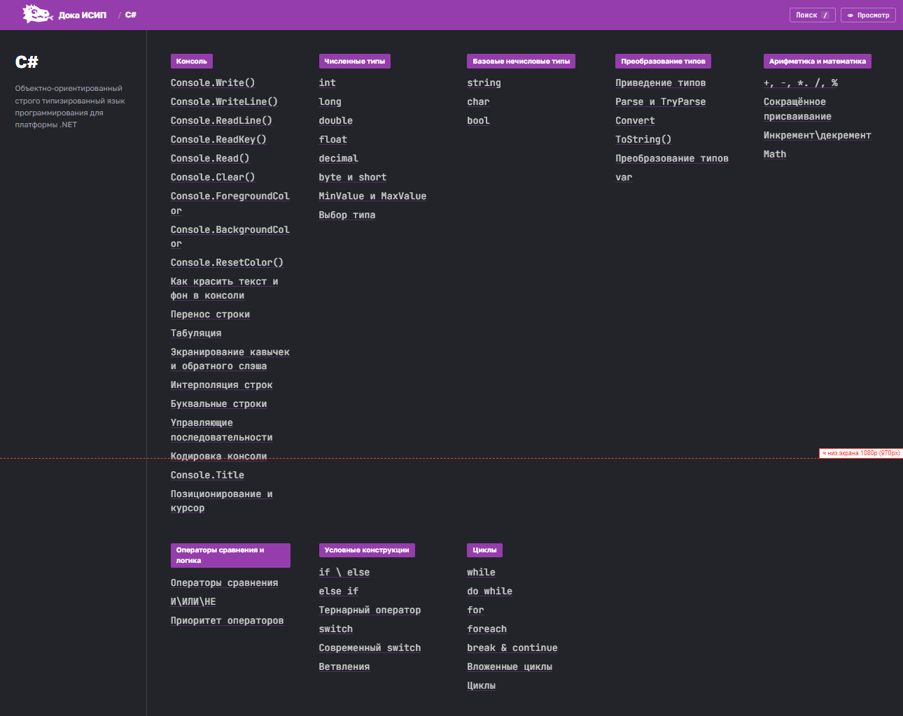
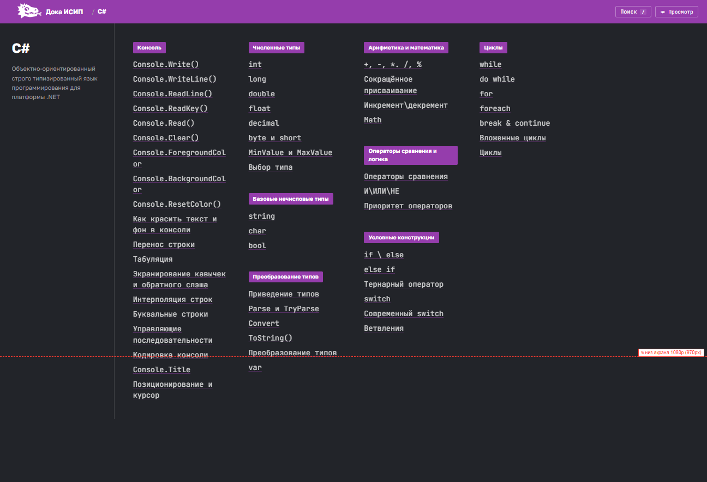
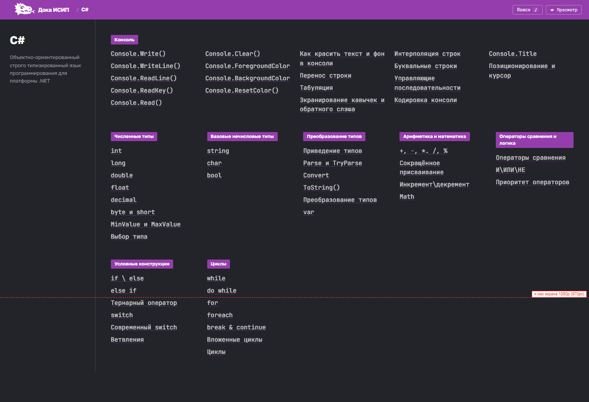
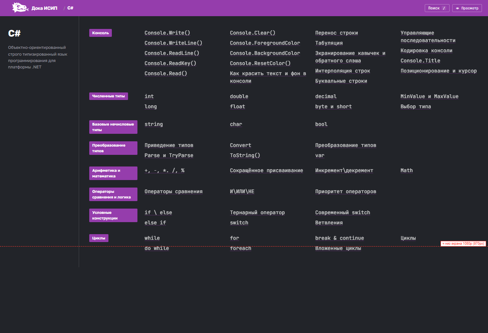

Одна и та же страница domain.html?id=csharp в четырёх вариантах раскладки.
Пунктирная красная линия — условный низ первого экрана (1080p).
| Вариант | Где начинается 2-й ряд / последняя группа | Низ контента | Что с «Консолью» (19 тем) |
|---|---|---|---|
| Сейчас | y ≈ 1140 px — ниже экрана | ≈ 1476 px | одна колонка, 996 px |
| 1. Колонки | все заголовки до y ≈ 729 px | ≈ 1100 px | длинная колонка, 996 px |
| 2. Широкая карточка | все заголовки до y ≈ 837 px | ≈ 1173 px | на всю ширину, 276 px, темы в 5 колонок |
| 3. Группы строками | последняя группа на y ≈ 913 px | ≈ 1013 px | на всю ширину, 250 px, темы в колонках |
CSS-grid: высота ряда равна самой высокой карточке. «Консоль» занимает 996 px, поэтому следующий ряд групп начинается на y ≈ 1140 px — ниже пунктира. Группы «Операторы…», «Условные…» и «Циклы» на первом экране не видны.

Видно пунктир и огромный пустой правый низ первой строки.



Все три варианта убирают главную проблему: вторая строка групп больше не прячется за первым экраном. Если важнее сохранить нынешний вид — вариант 2; если важнее компактность — вариант 3; если нужен минимум кода — вариант 1.